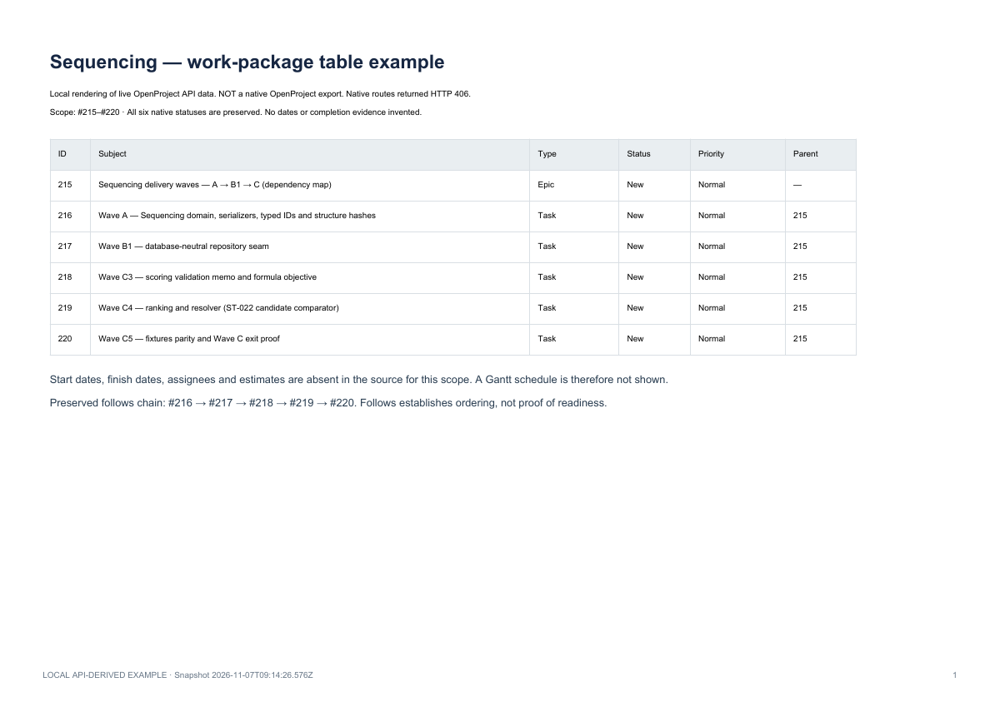

PDF · local API-derived
PDF Table
One-page comparison of the same six native items.
Open / download →Compare the same six actual Sequencing work packages in each example format, then see the full non-sample portfolio in Northstar.
Native download boundary: the advertised PDF/XLS/CSV routes returned HTTP 406 using the available API credential; Atom redirected to login. All downloadable examples here are locally generated from the live API snapshot, not native OpenProject downloads. Browser-session exports may still work; they were not tested. XLSX files are modern equivalents, not renamed XLS files.
13 actual project containers · 186 actual work packages · 83 observed relations · six reasoned focus proposals for 9–15 November 2026. No mock work packages and no invented source dates.
Common scope: #215, #216, #217, #218, #219 and #220. Snapshot 2026-11-07T09:14:26.576Z.
One-page comparison of the same six native items.
Open / download →Full source descriptions and observed relations; ten pages.
Open / download →No image references in the selected descriptions; no images invented.
Open / download →Six source rows, native fields and provenance notes.
Open / download →Source rows and a separate sheet preserving exact description text.
Open / download →Source rows plus the four observed follows relations for this scope.
Open / download →The same six IDs and native table fields; UTF-8 CSV.
Open / download →Six snapshot entries with exact subjects, source updates and descriptions. Not a journal/change feed.
Open / download →186 work packages, 13 projects, 83 relations and six separately labelled priority proposals.
Open / download →All six example items lack dates. This is a readiness check, not an invented schedule. Native Gantt export was not advertised in the tested list.
Open / download →CSV / XLSX: identity, subject, status, native Priority and parent. Reports: descriptions. Relations / API: exact typed edges.
Stable IDs join project ownership, hierarchy and dependencies. Missing dates, effort and assignees remain unknown.
Inspect the feed →Explain why a prerequisite or risk deserves attention. Keep source facts separate from proposed rank, scope and acceptance.

| Advertised format | HTTP result | File obtained |
|---|---|---|
| PDF Table | 406 | No — local example supplied separately |
| PDF Report with images | 406 | No — local example supplied separately |
| PDF Report | 406 | No — local example supplied separately |
| XLS | 406 | No — local example supplied separately |
| XLS with descriptions | 406 | No — local example supplied separately |
| XLS with relations | 406 | No — local example supplied separately |
| CSV | 406 | No — local example supplied separately |
| Atom | 302 · login redirect | No — local example supplied separately |